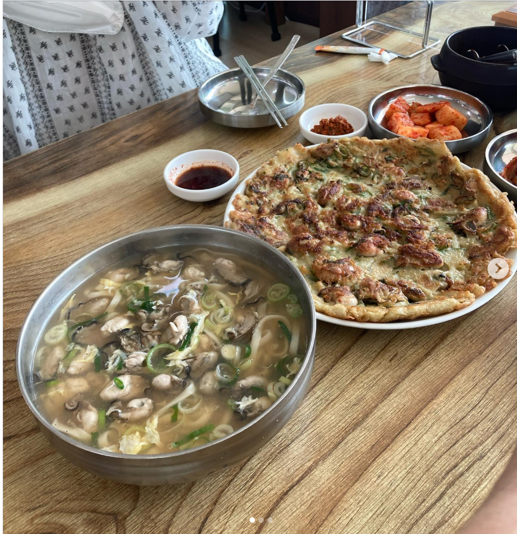
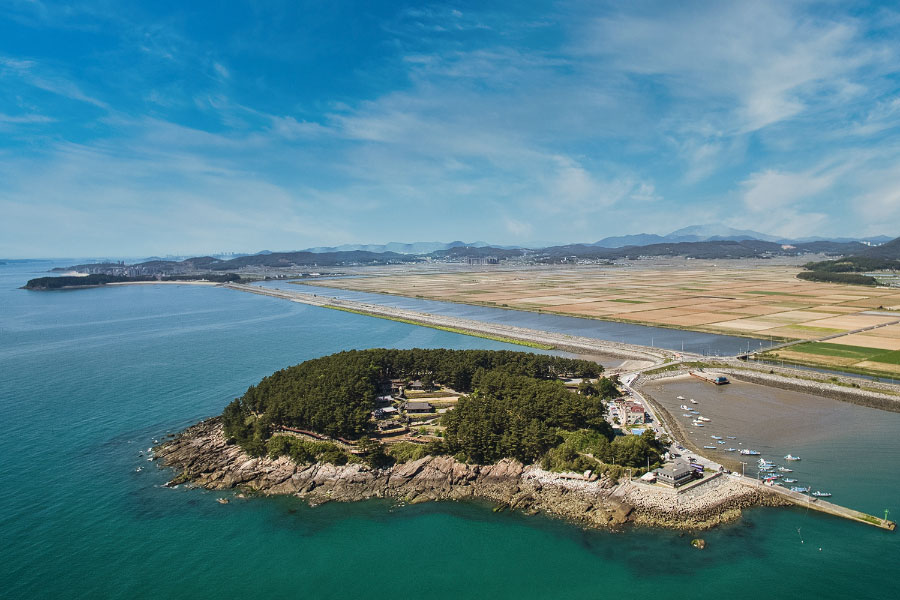
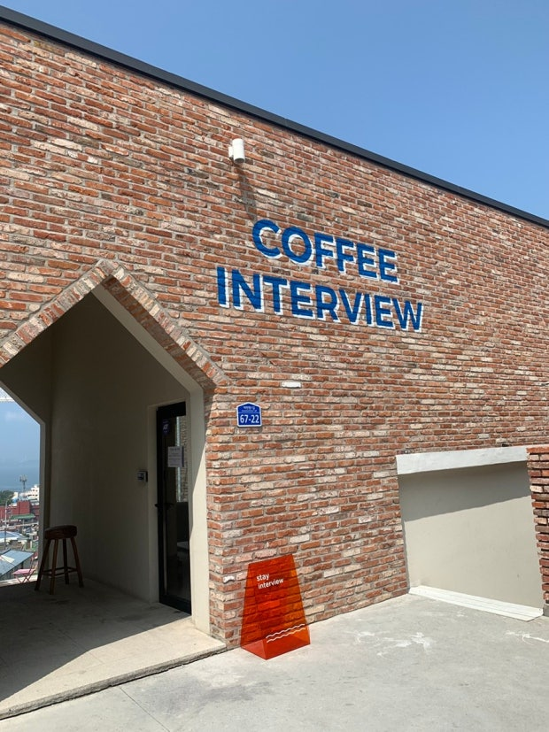
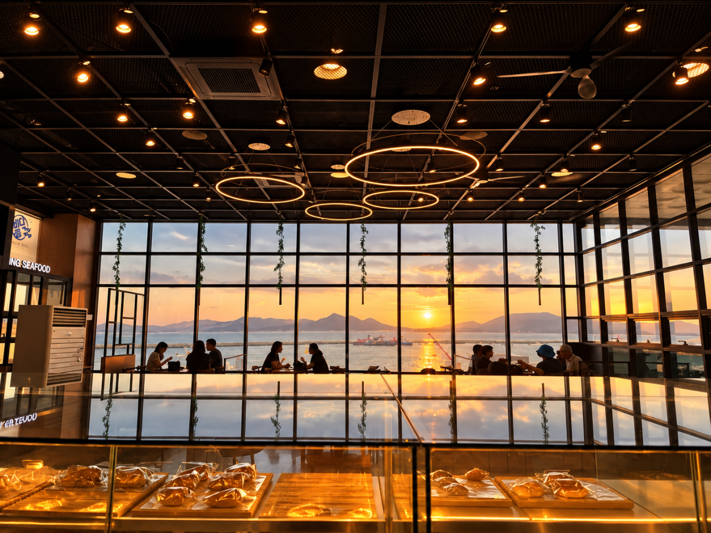
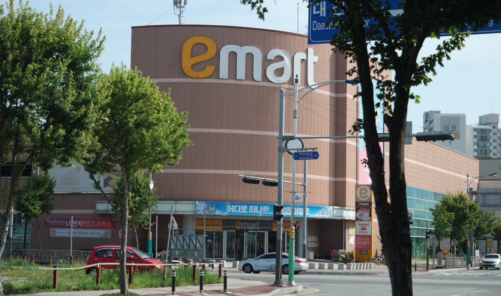
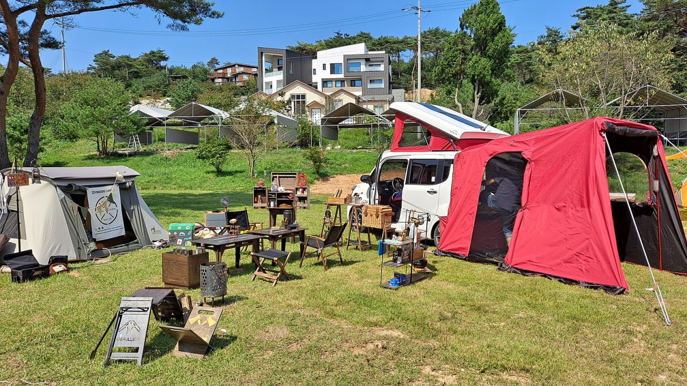
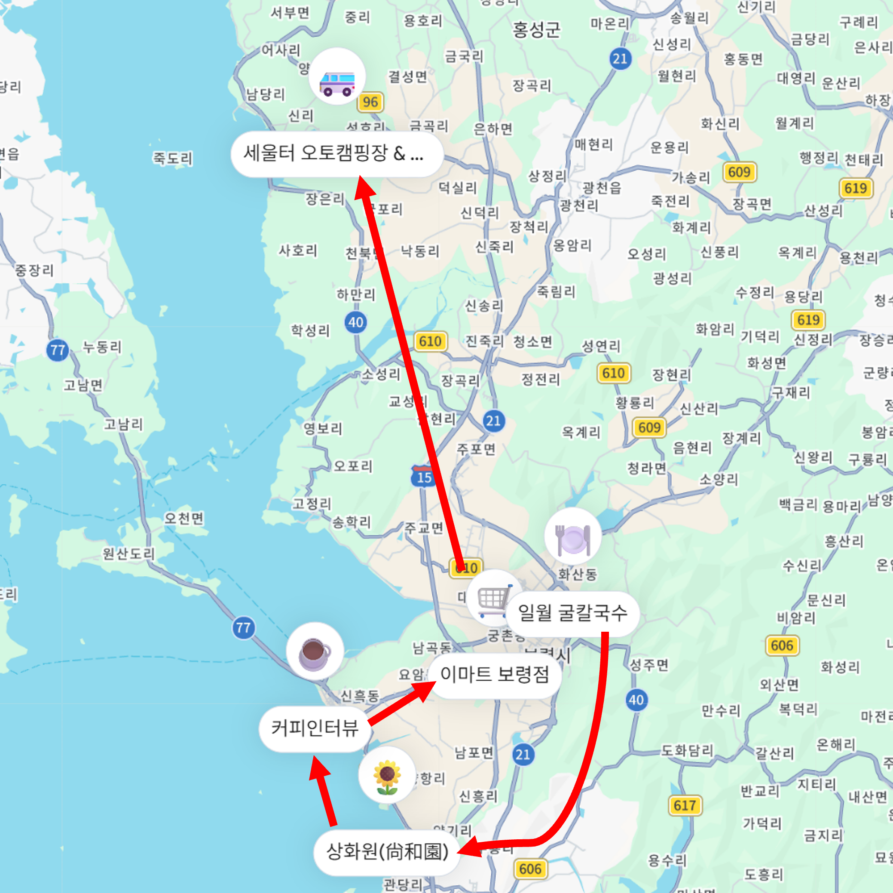

추석 연휴 당일 일정 및 동선 안내
총 7명
일월 굴칼국수
세울터 (홍성)
⏱ 영업시간: 10:00 - 20:00 (연휴 정상 영업)

보령의 대표 명물인 시원하고 깔끔한 굴칼국수와 바삭 고소한 굴전을 즐길 수 있는 식당입니다.
⏱ 관람시간: 09:00 - 18:00 (입장 마감 17:00)

섬 전체가 아름다운 한국식 전통 정원으로 꾸며진 명소로, 해안 회랑을 걸으며 멋진 서해 전망을 즐길 수 있습니다.
⏱ 영업시간: 10:00 - 20:00 / 21:00


탁 트인 대천 바다뷰를 보며 휴식을 취할 수 있는 카페입니다. 당일 분위기나 여유 시간에 맞추어 방문합니다.
⏱ 영업시간: 10:00 - 22:00 (정상 영업)

숙소 이동 길목에 위치한 대형 마트로, 저녁 바비큐용 고기, 채소, 음료 등을 함께 구경하며 구매합니다.
📍 충청남도 홍성군 서부면 판교리 645-43

자연 속 숙소 입실 후 야외 캠핑 감성으로 저녁 바비큐 파티를 즐기며 일정을 마무리합니다.
